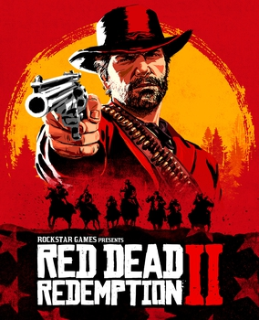
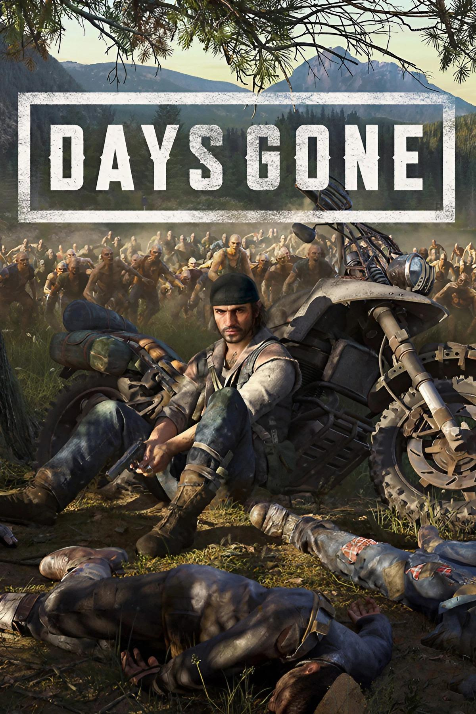

Welcome to Video Game store
"Welcome to the virtual realm of gaming excellence, where every click unlocks endless adventures! At our online game business store, we're more than just pixels on a screen – we're your gateway to boundless excitement and immersive worlds. Dive into a treasure trove of titles spanning genres and platforms, curated to ignite your passion for play. From epic quests to pulse-pounding battles, our collection promises something for every gamer. Explore our virtual aisles brimming with the latest releases, classic favorites, and hidden gems waiting to be discovered. With seamless navigation and expert recommendations, your journey to gaming nirvana starts here. Join our community of enthusiasts, where camaraderie and competition thrive in equal measure. Get ready to level up your gaming experience – welcome to our online game business store!"

Top Games
-

Red Dead Redemption $59.0
Red Dead Redemption 2 is a 2018 action-adventure game developed and published by Rockstar Games. The game is the third entry in the Red Dead series and a prequel to the 2010 game Red Dead Redemption. The story is set in a fictionalized representation of the United States in 1899 and follows the exploits of Arthur Morgan, an outlaw and member of the Van der Linde gang, who must deal with the decline of the Wild West while attempting to survive against government forces, rival gangs, and other adversaries.
-

Days Gone $45.0
Days Gone is a 2019 action-adventure video game developed by Bend Studio and published by Sony Interactive Entertainment. The game was released for the PlayStation 4 in April 2019. A Windows port was released in May 2021. Days Gone is set in post-apocalyptic Oregon two years after the start of a pandemic that turned a portion of humanity into vicious zombie-like creatures. Former outlaw-turned-drifter Deacon St. John discovers his wife Sarah, having been assumed dead, may still be alive and goes on a quest to find her.
-

Sekiro: Shadows Die Twice $30.0
Sekiro follows a shinobi known as Wolf, who attempts to take revenge on a samurai clan that imprisoned him and kidnapped his lord. The gameplay is focused on stealth, exploration, and combat, with a particular emphasis on boss battles. It takes place in a fictionalized Japan during the Sengoku period and makes strong references to Buddhist mythology and philosophy. Lead director Hidetaka Miyazaki wanted to create a new intellectual property (IP) that marked a departure from their Dark Souls series, looking at games such as Tenchu for inspiration.
-

Valorant $0.0
Valorant is a free-to-play first-person tactical hero shooter developed and published by Riot Games, for Windows.[3] Teased under the codename Project A in October 2019, the game began a closed beta period with limited access on April 7, 2020, followed by a release on June 2, 2020. The development of the game started in 2014. Valorant takes inspiration from the Counter-Strike series, borrowing several mechanics such as the buy menu, spray patterns, and inaccuracy while moving.
-

GTA V $50.0
Grand Theft Auto V is a 2013 action-adventure game developed by Rockstar North and published by Rockstar Games. It is the seventh main entry in the Grand Theft Auto series, following 2008's Grand Theft Auto IV, and the fifteenth instalment overall. Set within the fictional state of San Andreas, based on Southern California, the single-player story follows three protagonists—retired bank robber Michael De Santa (Ned Luke), street gangster Franklin Clinton (Shawn Fonteno), and drug dealer and gunrunner Trevor Philips (Steven Ogg), and their attempts to commit heists while under pressure from a corrupt government agency and powerful criminals. Players freely roam San Andreas's open world countryside and fictional city of Los Santos, based on Los Angeles.
-

Wolf Among Us $30.0
The Wolf Among Us is an episodic graphic neo-noir mystery-drama adventure game developed by Telltale Games, based on Bill Willingham's Fables comic book series, to which it serves as a prequel. The game consists of five episodes that were released throughout 2013 and 2014.[9] Retail versions for the PlayStation 3, PlayStation 4, PlayStation Vita, Xbox 360, and Xbox One consoles were made available in November 2014.[10] In the game, players control Bigby Wolf, the sheriff of Fabletown – a clandestine community within 1980s New York City consisting of various fantastical characters from fairy tales and folklore – and must investigate a series of mysterious murders, the first ones to occur in Fabletown in a long time.
"Welcome to our online game business store, where adventure awaits at every click! Explore a virtual world of endless possibilities and uncover treasures beyond imagination. Gear up, strategize, and embark on epic quests from the comfort of your screen."